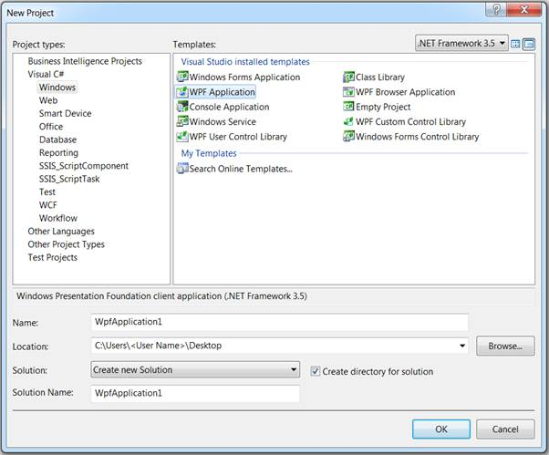
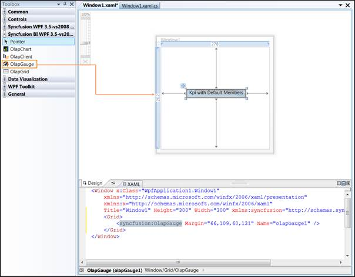

To create an OLAP Gauge for WPF:
1. Click Start à All Programs à Microsoft Visual Studio 2008.
2. Now go to File à New Project. The New Project dialog box appears.

Figure 7: “New Project” dialog box
3. Select WPF Application in the New Project dialog box and click OK. A new WPF application gets created.
4. The OLAP Gauge control is now available in the toolbox under the tab named “Syncfusion BI WPF 3.5–vs2008 Toolbox <Essential studio version number>”. Drag and drop the OLAP Gauge control onto the application.

Figure 8: OLAP Gauge in designer
5. The height, width and other properties of OLAP Gauge control are set either through the property window or manually in the XAML code as well as in the code behind region.
For example, the height and width property set in the XAML code region is shown below:
|
[XAML]
<Syncfusion:OlapGauge ID="olapGauge1" Width="400px" Height="200px" runat="server"> </Syncfusion:OlapGauge> |
6. Once the OLAP Gauge control is defined, navigate to the code-behind file.
7. To bind the OLAP Gauge control with cube data, the OlapDataManageris instantiated first through anyone of the below methods in the window load event.
Binding OLAP Gauge to the Server:
|
[C#]
OlapDataManager DataManager = new OlapDataManager(connectionString); |
|
[VB]
Dim DataManager As OlapDataManager = New OlapDataManager(connectionString); |
Binding OLAP Gauge to the Server using Data Provider:
|
[C#]
AdomdDataProvider dataProvider = new AdomdDataProvider(connectionString); OlapDataManager DataManager = new OlapDataManager(dataProvider); |
|
[VB]
Dim dataProvider As AdomdDataProvider = New AdomdDataProvider(connectionString) Dim DataManager As OlapDataManager = New OlapDataManager(dataProvider) |
8. i) After instantiating the OlapDataManager, a report is created by the user as per their requirements, which comprises of dimension, measure and named set elements along the categorical, series and slicer axes and added to the OlapDataManager eitherthrough the “SetCurrentReport(OlapReport)” method or by the “CurrentReport” property.
ii) Now, itis assigned to gauge controls OlapDataManagerand the DataBind() method is called to render the OLAP gauge with the current report information.
The report can be defined in code, as follows:
|
DataManager.SetCurrentReport(this.CreateReport()); this.olapGauge1.OlapDataManager = DataManager; this.olapGauge1.DataBind();
private OlapReport CreateReport() { OlapReport report = newOlapReport(); report.CurrentCubeName = "Adventure Works";
//Specifying the KPI name KpiElements kpiElement = newKpiElements(); kpiElement.Elements.Add(newKpiElement { Name = "Internet Revenue", ShowKPIGoal = true, ShowKPIStatus = true, ShowKPIValue = true, ShowKPITrend = true });
DimensionElement dimensionElementColumn = newDimensionElement(); //Specifying the dimension name dimensionElementColumn.Name = "Customer"; //Adding the level with the hierarchy Name dimensionElementColumn.AddLevel("Customer Geography", "Country");
//Specifying the measure name MeasureElements measureElementColumn = newMeasureElements(); measureElementColumn.Elements.Add(newMeasureElement { Name = "Internet Sales Amount" });
DimensionElement dimensionElementRow = newDimensionElement(); //Specifying the dimension name dimensionElementRow.Name = "Date"; //Adding the level with the hierarchy Name dimensionElementRow.AddLevel("Fiscal", "Fiscal Year");
report.CategoricalElements.Add(dimensionElementColumn); report.CategoricalElements.Add(kpiElement); report.CategoricalElements.Add(measureElementColumn); report.SeriesElements.Add(dimensionElementRow); return report; } |
|
[VB]
DataManager.SetCurrentReport(Me.CreateReport()) Me.olapGauge1.OlapDataManager = DataManager Me.olapGauge1.DataBind()
Private Function CreateReport() As OlapReport
Dim report As OlapReport = New OlapReport() report.CurrentCubeName = "Adventure Works"
'Specifying the KPI name Dim kpiElement As KpiElements = New KpiElements() kpiElement.Elements.Add(New KpiElement With {.Name = "Internet Revenue", .ShowKPIGoal = True, .ShowKPIStatus = True, .ShowKPIValue = True, .ShowKPITrend = True})
Dim dimensionElementColumn As DimensionElement = New DimensionElement() 'Specifying the dimension name dimensionElementColumn.Name = "Customer" 'Adding the level with the hierarchy Name dimensionElementColumn.AddLevel("Customer Geography", "Country")
'Specifying the measure name Dim measureElementColumn As MeasureElements = New MeasureElements() measureElementColumn.Elements.Add(New MeasureElement With {.Name = "Internet Sales Amount"})
Dim dimensionElementRow As DimensionElement = New DimensionElement() 'Specifying the dimension name dimensionElementRow.Name = "Date" 'Adding the level with the hierarchy Name dimensionElementRow.AddLevel("Fiscal", "Fiscal Year")
report.CategoricalElements.Add(dimensionElementColumn) report.CategoricalElements.Add(kpiElement) report.CategoricalElements.Add(measureElementColumn) report.SeriesElements.Add(dimensionElementRow) Return report
End Function |
9. Run the application. The following output is generated.
Figure 9: OLAP Gauge